这可是两广总督的儿子。至今两广都被分割，广西广东两个省。两广合，天下乱。
赵无极前期但凡不对苏灿做的这么绝，他最后都可以篡位成功[捂脸][捂脸][捂脸]
杨幂小时候 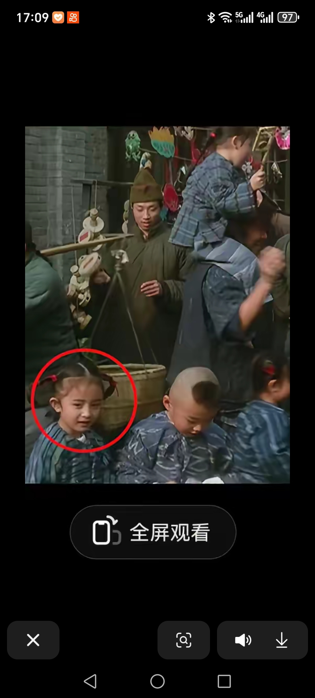
你告诉我这玩意是狗？[噢买尬]
是这个吧[泪奔][泪奔]哈哈哈哈我的转转二手小米平板都要笑飞了
五块 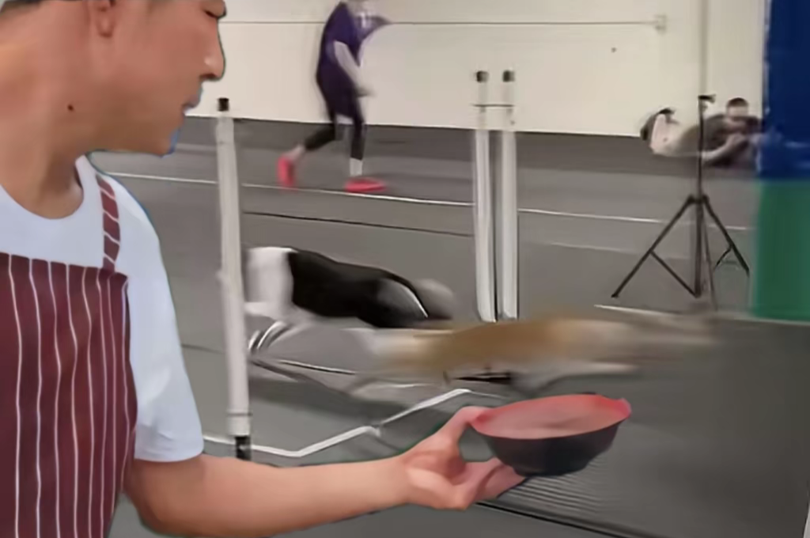
闪电⚡：天才只是见到我的门槛 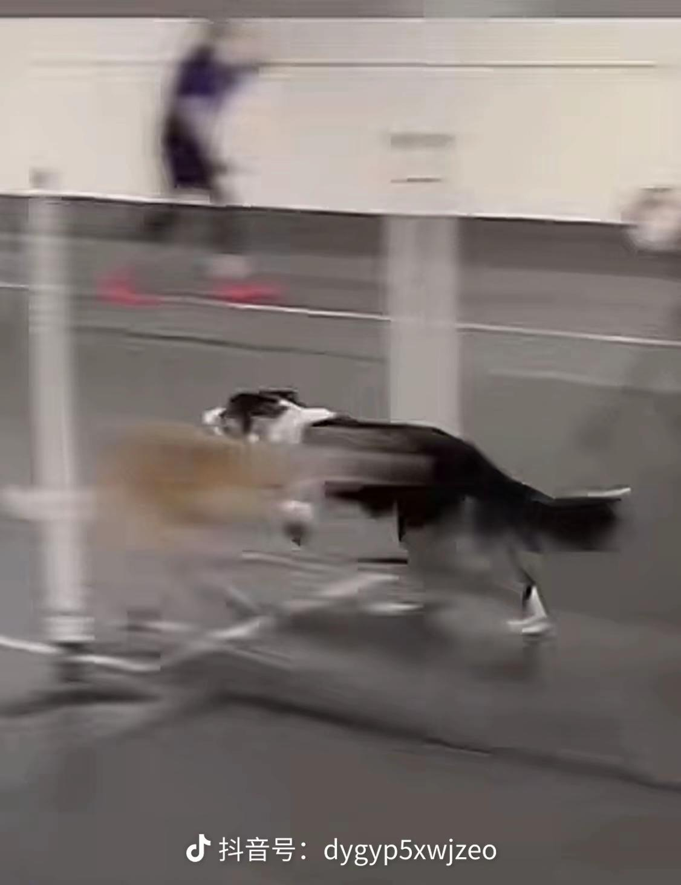
刷到黄色闪电的样子了 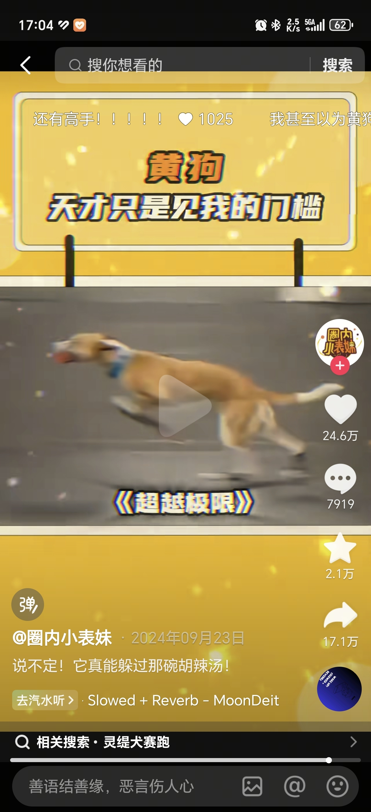
果然黄色适合送外卖[看]
黄色闪电真的惊呆我了，什么玩意嗖一下
正想夸一句一个比一个快，啥玩意过去了？
幸好狗不看视频，要是得知他们数十年如一日的训练都成了黄色闪电的铺垫，不得气死
曹植：煮！豆！燃！豆！萁！ 卫兵：报！曹植已出城五十里！ 曹植：豆！在！釜！中！泣！ 诸葛亮：曹植！你来我帐里做甚！ 曹植：本！是！同！根！生！ Tom: who are you？ 曹植：相！煎！何！太！急！ 派蒙：这么说，你是来自异世界的旅行者？
他是被主人扔出去的吗
“不是？哥们？” 哈哈哈哈要笑成转转二手华为三折叠了 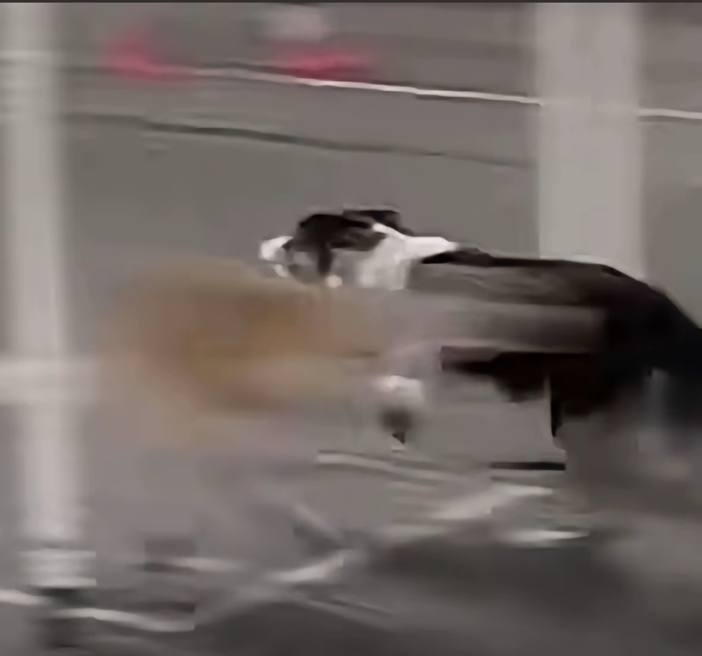
太燃了 送我去当狗
不想给我们看就明说！！！看了三遍也没看到黄色闪电什么样！！
什么玩意嗖一下就过去了
装的是我对不[呲牙][鼓掌][鼓掌][鼓掌]
你俩没事儿少亲点嘴儿吧[捂脸]都快长成双胞胎了[捂脸]
姐，你知不知道我小时候看你哇哇哭啊[黑脸][黑脸]
她为什么越老越好看[呲牙]
之前看一个评论，说“他是残缺的玉，我是完整的屎”[捂脸][捂脸][捂脸]
看他会那么多乐器，我想的是，他的妈妈得付出多少啊。
他长的好像一个明星，但是又说不上来是谁[捂脸][捂脸]
小岱跟曼昱合作了？！恭喜恭喜，两个优秀的小孩儿[比心][比心]
知道小岱，但没想到和最爱的曼昱一起拍杂志了[摸头]两个都是好好的人[摸头][摸头]
我的自闭症儿子也很帅，希望一直这么开心的生活 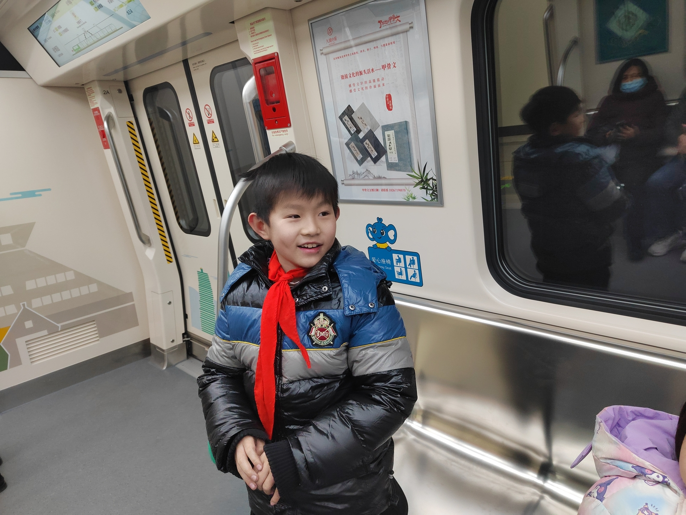
看到和曼昱的杂志啦，希望小岱越来越好
他真是一位天才，我真是个废物
傲慢[捂脸]，甲儒太可爱了
姜甲儒真是好样子[赞][赞][赞][比心][比心][比心]
跟余华英一样，被杨妞花说中了，人贩子永远不会认错的，再去咨询一下杨妞花姐姐吧
“这么多年我还是只喜欢你” ---《难哄》
他是我在抖音里看到认亲里最贫穷的一个还很开心的，别的都人均回来有房有豪车[流泪]！希望他以后的路里全是幸福和坦荡！
终于找到安慰自己的理由[尬笑]
你就是这么捡的？
猫没到，手先伸出二两地
这就和人贩子一样的手段。
它虽然在逃跑，但是并不怕人[猪头][猪头]
它妈回来后:
引诱➕追逐＝“捡”
其实他没想跑，他要想跑，你抓不住的。
小区楼下可怜的小猫，它很愿意跟我回家 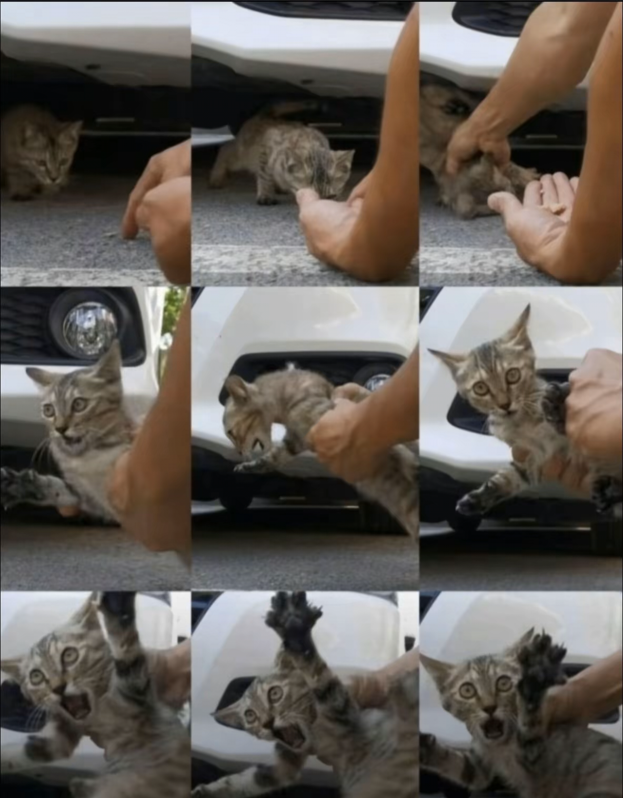
诱拐第一视角[黑脸]
@闲湫 给你家孩子看紧点吧，你看看现在这猫贩子老多了
原来外省仔是这样讲潮汕话的[憨笑]
我说为什么听着怪怪的，原来是外省崽
哈哈哈哈哈哈哈好多潮汕的朋友叫我外地仔[抱抱你][抱抱你][抱抱你]
真潮汕人只会扑扑扑[憨笑]
原来还有这么奶的潮汕话[流泪]，我们这都是普母起手[流泪]
在家没听过这么温柔的潮汕话
去年去涠洲岛游玩，当时就觉得有个人在烈日下劳作，与我们游玩的人形成鲜明对比，于是远远的拍下照片，却不知道还有这样有力量的故事 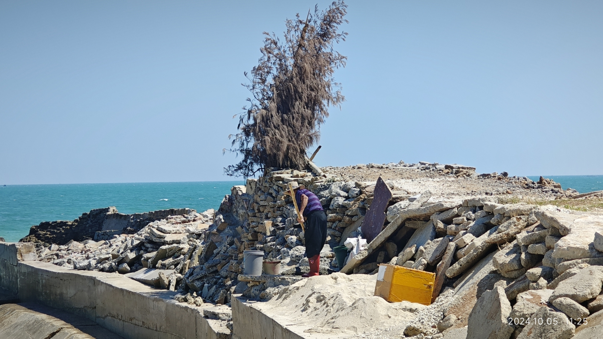
干了30年，船都进来了，结果这帮人享受着，确没人帮忙？
像这样的老人，百年后足可以立碑了。 我们这以前也是有个类似的，他走之后我爷爷他们立碑已经拜了几十年了
谁懂勇士和广东在比赛的前阶段都是打的不太好，但是到后面都开始逆袭了[流泪]勇士广东总冠军！
这一下我都恍惚了，太像哈登了[流泪][流泪][流泪]
天边龙挂才牛批，我都不知道摄影师等了多久[捂脸][捂脸]
幸亏四大名著以前拍完了！
无数经典镜头
新三国，我就记住了这句台词：“不可能，绝对不可能”
只有一个镜头，无对话无配乐。我认为最心痛的镜头。 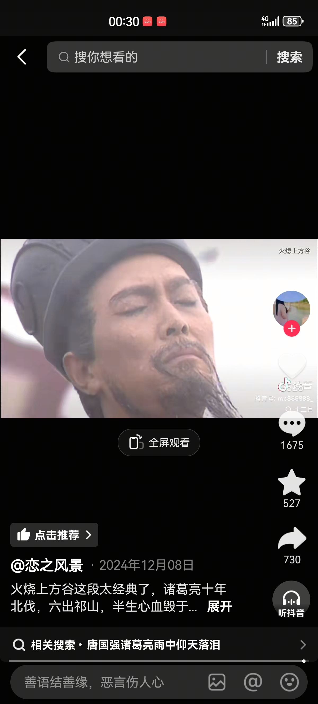
还是新三国好，谁死了都不心疼。
特意截个图，天神下凡[赞][赞]！ 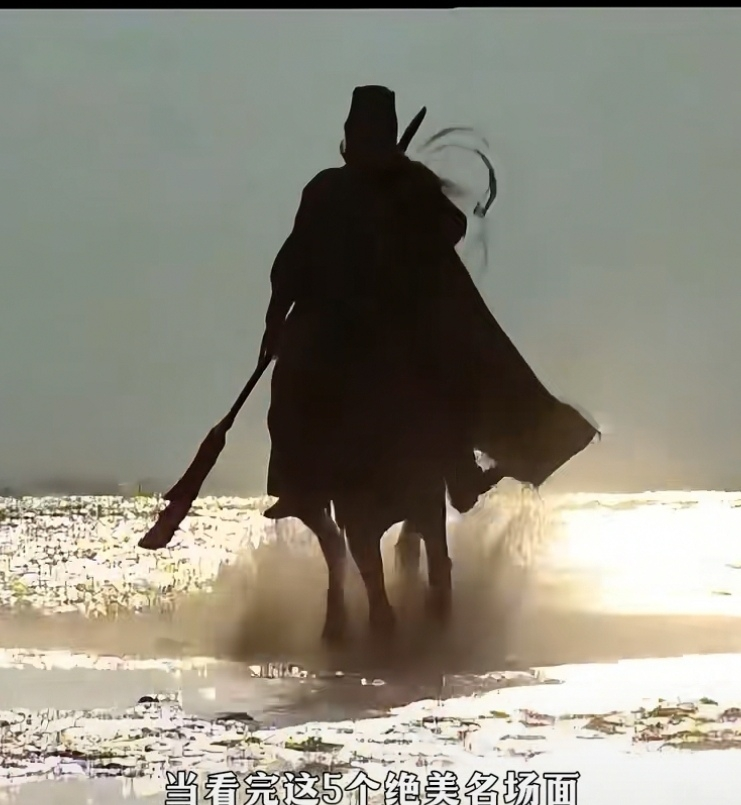
这才是真正的中国男人该有的样子[赞][赞][赞]
大爷差点儿晚节不保
以前看《倚天屠龙记》喜欢赵敏，后来喜欢周芷若，后来长大了发现小昭和珠儿也不错，现在单身久了发现灭绝也能凑合了……
谁能想到，这个天生坏种居然会是完美无缺的阿七，不得不说好演员的可塑性值得称赞👍🏻
朱尔旦就是一个贪财又好色的人，没换心之前就能看出来
结果就朱尔旦妻子最惨
按理说男主作为军人还那么早就知道秘密，找一些关系网：飞行员，医生，机械师……自己组队逃跑不就好了[泪奔]
给我下来! 换辆车亲[听歌]
猫都知道亲嘴要闭眼 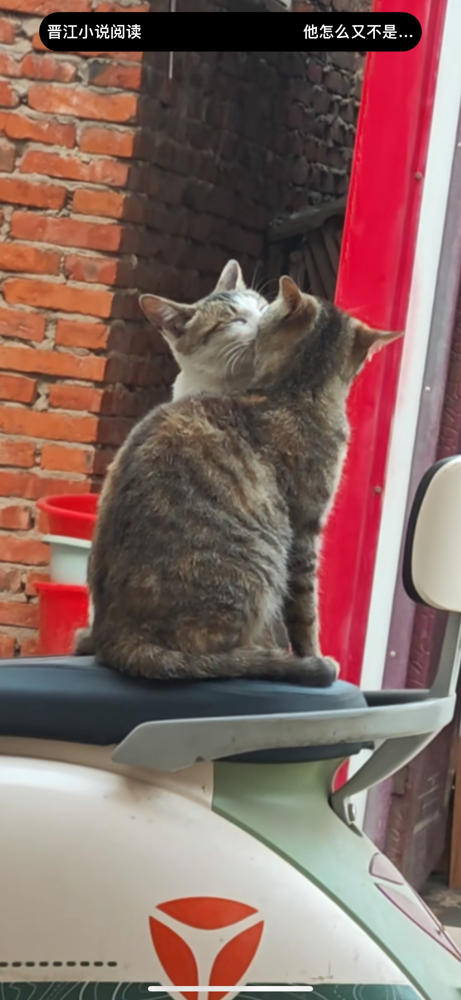
刷到这个视频的朋友，手机电池数字都会带个7吧[尬笑]
交换一下表情包[看] 第二排第二个[看]
就像屏幕前的各位网友[微笑]
我一年级儿子写的作文[憨笑][憨笑][憨笑] 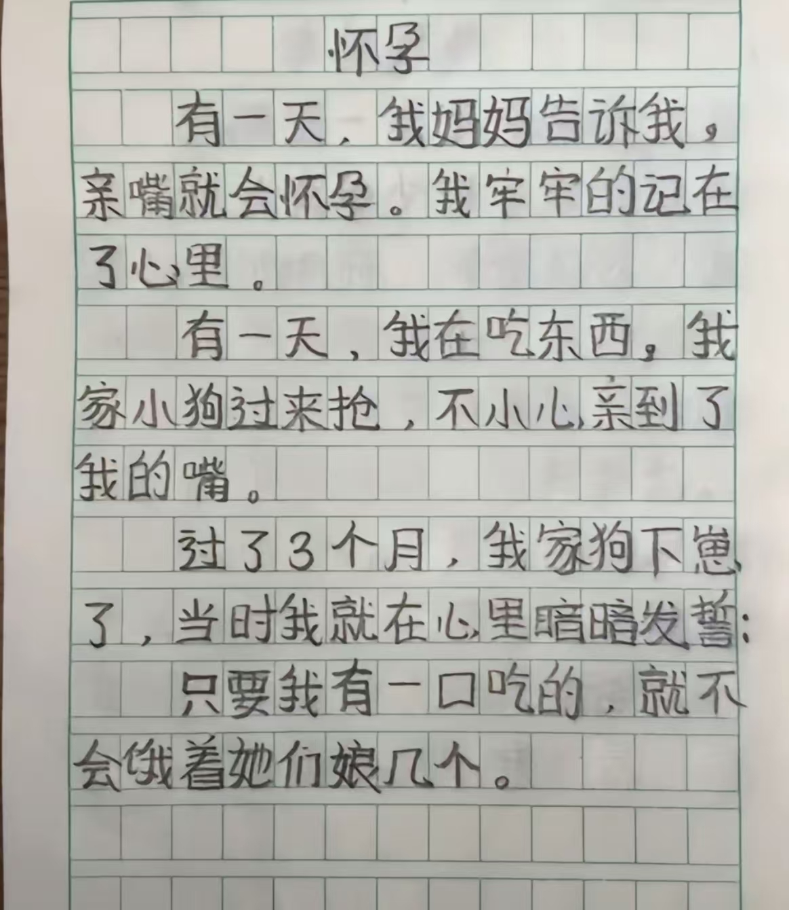
“宝宝那边有人看我们” “别管他” 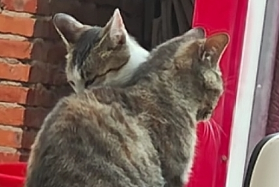
断了它们的猫粮 让它们尝尝没有物质的爱情多么不堪一击
猫都有人亲，而你。我的朋友
枯藤老树昏鸦，车座两只狸花，亲亲咂咂嘴巴，略显浮夸，看呆一众吃瓜！ 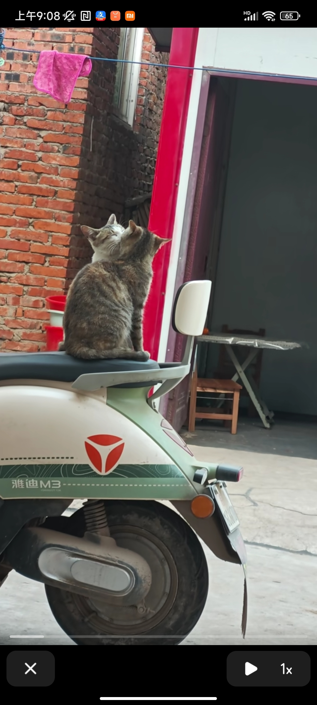
埋，分开埋，一个埋河南，一个埋云南
美国从骨子里害怕了！——连中国的大蒜都能威胁美国安全！[捂脸][捂脸]
外交部发言人越来越霸气了[赞][赞][赞][赞]
省流侠：伙计跟他抢的那一捆银元是真的，纸破了都撒地上了，债主更信了[哈欠][哈欠]
Read more: